znver2
The plots show the relative difference in runtime (LoopVectorization.jl - libxsmm) / libxsmm for every (m, n, k) triplet. Negative / red values are better for LoopVectorization.jl, positive / blue values are better for libxsmm.
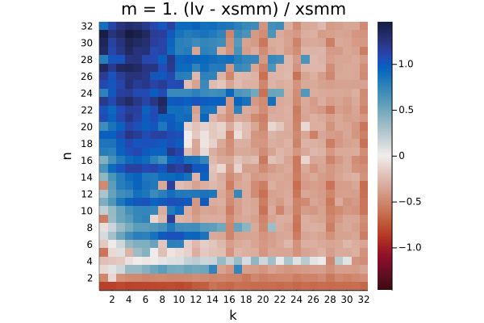
Q₁ = -0.391. Q₂ = -0.297. Q₃ = 0.789

Q₁ = -0.346. Q₂ = 0.471. Q₃ = 1.233
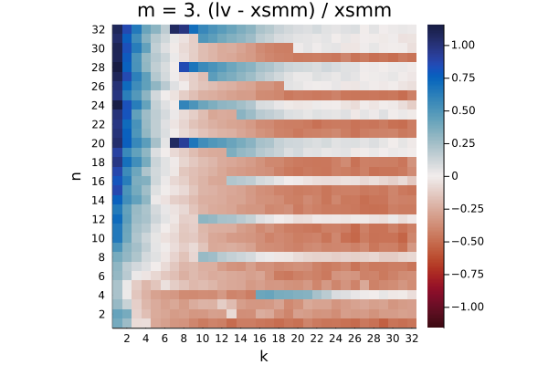
Q₁ = -0.378. Q₂ = -0.120. Q₃ = 0.075

Q₁ = -0.331. Q₂ = -0.263. Q₃ = -0.198

Q₁ = 0.136. Q₂ = 0.327. Q₃ = 0.853

Q₁ = -0.208. Q₂ = 0.260. Q₃ = 0.525
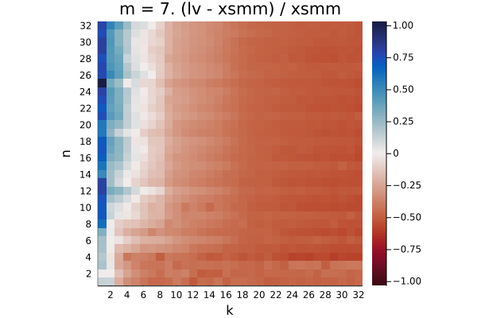
Q₁ = -0.506. Q₂ = -0.444. Q₃ = -0.265
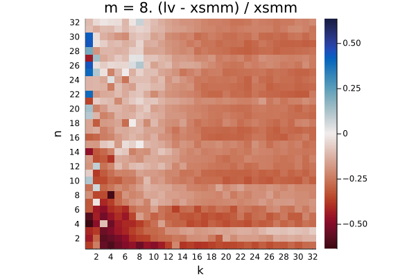
Q₁ = -0.277. Q₂ = -0.236. Q₃ = -0.172

Q₁ = -0.146. Q₂ = -0.034. Q₃ = 0.443

Q₁ = -0.157. Q₂ = -0.094. Q₃ = 0.099
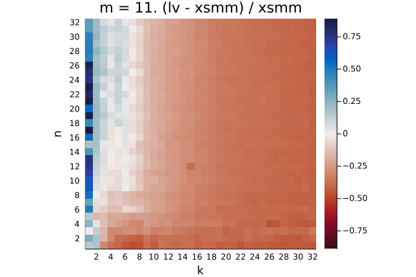
Q₁ = -0.389. Q₂ = -0.336. Q₃ = -0.183

Q₁ = -0.057. Q₂ = -0.021. Q₃ = -0.003

Q₁ = -0.125. Q₂ = -0.047. Q₃ = 0.109
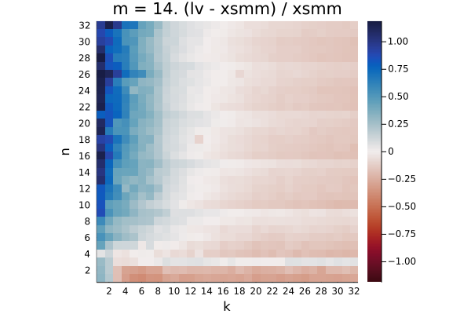
Q₁ = -0.123. Q₂ = -0.045. Q₃ = 0.112
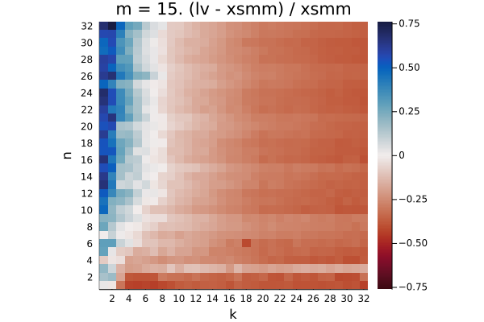
Q₁ = -0.334. Q₂ = -0.257. Q₃ = -0.110

Q₁ = 0.005. Q₂ = 0.046. Q₃ = 0.086
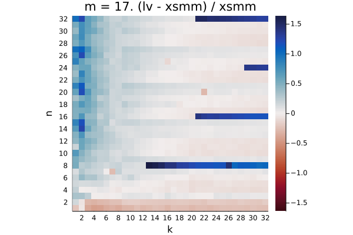
Q₁ = -0.033. Q₂ = 0.066. Q₃ = 0.187

Q₁ = -0.038. Q₂ = 0.045. Q₃ = 0.153
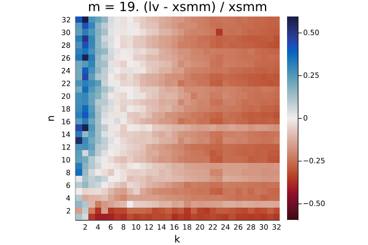
Q₁ = -0.248. Q₂ = -0.166. Q₃ = -0.054

Q₁ = -0.042. Q₂ = 0.023. Q₃ = 0.132
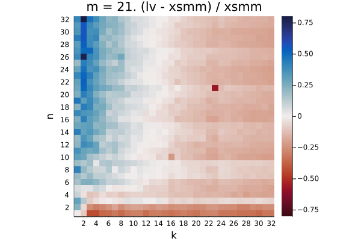
Q₁ = -0.152. Q₂ = -0.073. Q₃ = 0.060

Q₁ = -0.153. Q₂ = -0.074. Q₃ = 0.067

Q₁ = -0.313. Q₂ = -0.248. Q₃ = -0.123

Q₁ = -0.111. Q₂ = -0.069. Q₃ = -0.020

Q₁ = -0.093. Q₂ = -0.026. Q₃ = 0.083
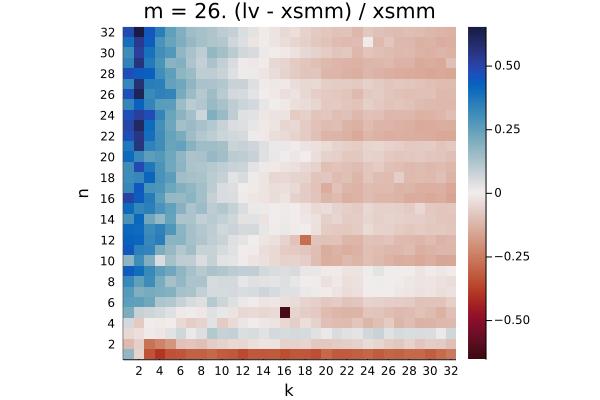
Q₁ = -0.095. Q₂ = -0.026. Q₃ = 0.085

Q₁ = -0.246. Q₂ = -0.177. Q₃ = -0.065

Q₁ = 0.109. Q₂ = 0.162. Q₃ = 0.239
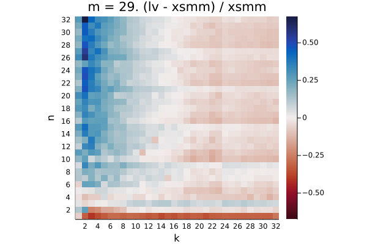
Q₁ = -0.063. Q₂ = -0.010. Q₃ = 0.093

Q₁ = -0.062. Q₂ = -0.010. Q₃ = 0.092

Q₁ = -0.213. Q₂ = -0.158. Q₃ = -0.044

Q₁ = 0.015. Q₂ = 0.057. Q₃ = 0.092